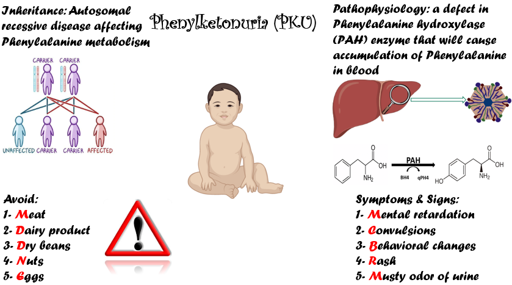
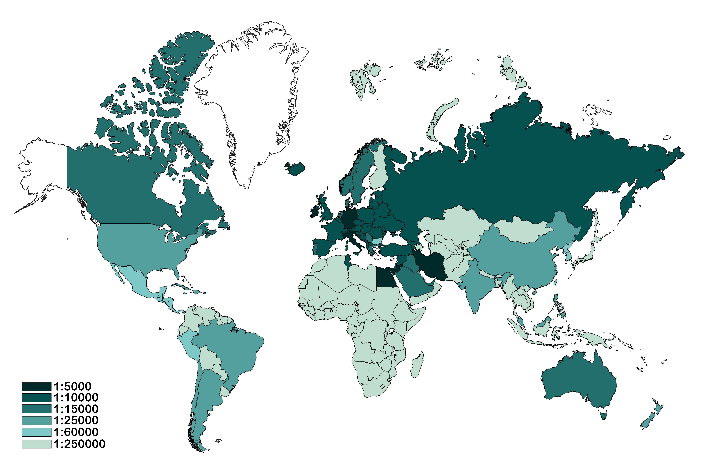
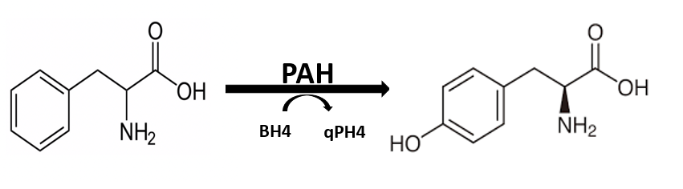
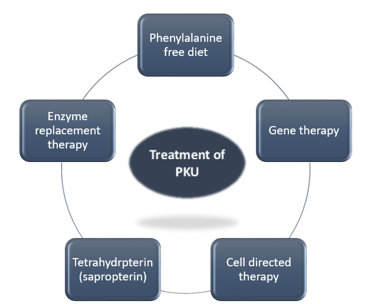
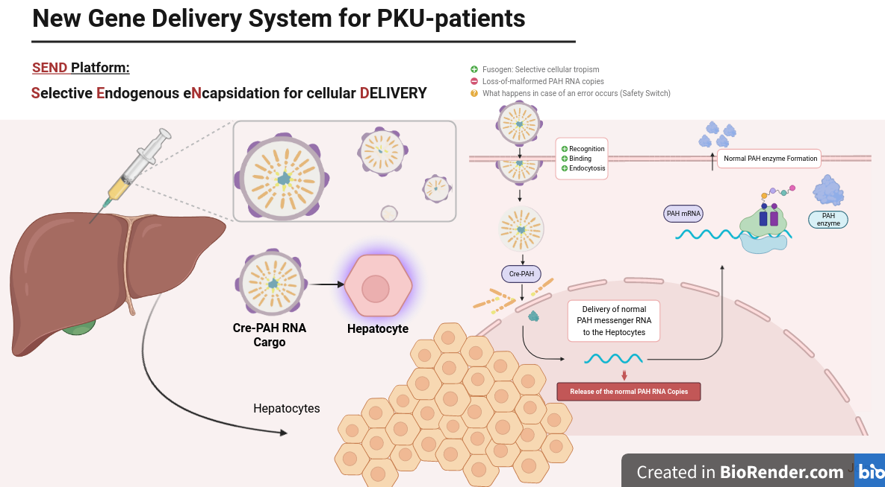

Our inspiration
This year, we have been inspired by one of the PKU survivor, Kevin Alexander. “Had I not always been on diet and had I not always been on my formula, it is undeniable that I would have been in an institution, that I would have become mentally impaired”, he said . These are the words of a man who has abided to his diet no matter how hard it was. He did so because he was told what it would be like if he does not follow his diet. However, not everyone is too lucky to have such knowledge or even to be diagnosed as early as Kevin was. Some people in the developing countries do not have the privilege of screening programs due to their high cost.

Figure 1: Background about phenylketonuria
Problem and rationale
Inborn errors of metabolism (IEM) have been a major issue that threatens the lives of our newborns if not detected. The earlier we discover them, the more chances we have to prevent their detrimental consequences on our children. According to statistics, phenylketonuria affects 1 from every 10,000 children worldwide. While in Egypt, this rate increases to reach about 1 from every 5,000 children in 2020 figure (2). Egypt has the third highest prevelance rate of phenylketonuria (PKU) all over the world after Italy and Ireland. That’s why we have chosen our project this year to be about Phenylketonuria (PKU). In Egypt, the cost of the available diagnostic tool for PKU is 27$ per test, which puts a great burden on both the government and families. Moreover, this diagnostic tool is invasive, expensive and requires about 1 to 2 weeks to give results. Moreover, we have recently paid much money to detect IEM using Next Generation Sequencing (NGS) technique which imposes an extra burden on our country. We aim to reduce morbidity that results from late diagnosis and management of IEM. So, in our project, we have created a novel diagnostic tool for PKU as a prototype which is less invasive, requiring less time, user friendly and cost-effective to diagnose PKU patients. Our project hasn’t stopped to that point but it has extended to develop a novel approach to treat PKU using synthetic biology as our cornerstone. We would like to establish a deep learning algorithm (SIDEA) for directed evolution of aptamers to be the fittest in terms of affinity, stability, and physicochemical parameters, local and global evolutionary contexts. Through our directed evolution studies and the continuous search along various aptamer sequences. We started by understanding and analyzing essential components from their evolutionary context and fitness parameters. Therefore we were able to rationalize the resulting outcomes from the manipulation and change of their nucleotide sequence and how that affected their function, in terms of the variations in their folding, stability and binding affinity to their ligands. This process was a cheap and accurate alternative for the Systematic Evolution of Ligands by Exponentila Enrichment, SELEX, operation that requires lots of money and financial support.

Figure 2. Prevalence of PKU.
Background
Phenylketonuria is an inherited autosomal recessive (AR) disorder caused by different mutations in the phenylalanine hydroxylase (PAH) gene. These mutations result in a decrease in metabolism of phenylalanine (Phe) in the hepatocytes, causing accumulation of excess amount of phenylalanine. PAH hydroxylates Phe to tyrosine in the presence of tetrahydrobiopterin (BH4) as a co-factor figure (3). Defects in either PAH or the production or recycling of BH4 may result in hyperphenilalaninemia which can cause irreversible intellectual disability if untreated (1). Moreover, others may suffer from microcephaly, delayed milestones and hyperactivity disorder (2). In severely mentally impaired patients, they may develop seizures (2). In addition, some may develop white matter abnormalities either early or late in the course of the disease progression (2). In some PKU patient, Autism may be the only symptoms without any other sign suggesting of the disease (2).

Figure 3: Normal metabolism of Phe to tyrosine by PAH enzyme.
Our diagnostic approach
There have been several method for neonatal screening of PKU such as the Guthrie test, others based on high performance liquid chromatography (HPLC) and tandem mass spectrometry (MS/MS). The latter method has been the most worldwide used in the previous 20 years using dry blood spot (3).
This year, we have adopted a novel method for detection of excess Phe. Frist, we will get a blood drop from any newborn heel. This drop will pass through a separation pad that will get rid of blood cells leaving cell free analyte. The analytic will then flow through the conjugation pad that will consume the normal amount of Phe leaving excess Phe to pass to the whole cell biosensor platform. On that pad, we have immobilized gold nano-particle labeled ssDNA (Au-NP labeled ssDNA) bonded to an aptamer that fit to Phe. In the presence of Phe, those aptamers will undergo conformational change separating Au-NP labeled ssDNA and only Excess Phe will pass to the control line. After that, ssDNA will anneal with its complementary strands emitting a color ensuring the flow in the kit. Excess Phe will then pass to the whole cell biosensor platform. Upon the degree of change of the color, the amount of Phe can be measured.
Our therapeutic approach
This year, we have not only focused on just diagnosing PKU patients but also broken our limits finding an innovative therapeutic approach that will lead to a cure by delivering a PAH encoding mRNA copies to hepatocytes not capable of folding this enzyme in a proper way.
There are many therapeutic approach for treatment of PKU figure (4). Phenylalanine free diet remains the cornerstone in management of PKU patients. However, non-compliance to diet regimen is the main obstacle that faces every patient. There has been an enzyme replacement therapy either using Phenylalanine hydroxylase enzyme (PAH) or Phenylalanine amino-lyase to decrease the level of phenylalanine (Phe) in the blood (4). Moreover, Tetrahydropterin (sapropterin) has shown to be effective in management of some patients of PKU reducing its level about 30% from baseline level (4). In addition, Gene therapy for the management of PKU has been introduced in various research groups during the last period. For example, in a mouse model of PKU, there has been a great advance made by the use of an adenovirus as a vector to deliver PAH gene into hepatocytes as they are hepatotropic viruses (4). At last, cell-directed therapy has been introduced recently but still under research. In this approach, liver repopulation by PAH encoding cells is achieved by hepatocytes transplantation but results till now are not conclusive on humans (4).

Figure 4: Therapeutic approaches for PKU patients.
In our project we are hitting a new approach based on synthetic biology. We have adopted a novel protocol called SEND platform (Selective Endogenous eNcapsidation for cellular Delivery) figure (5). SEND is superior to other gene delivery systems for at least two reasons. First, it uses proteins that do not stimulate immune cells so reducing the risk of adverse immune reactions. Second, it could be modulated with engineered fusogens that are capable of targeting specific cell types with high cellular tropism. Consequently, such fusogens could deliver therapeutic cargo to the target cells reducing the probability and severity of adverse effects. Following this approach we will be able to deliver mRNA encoding PAH into hepatocytes to be translated. This process will be regulated by Cas12g that will control PAH activity according to the level of Phe and tyrosine in the blood.

Figure 5:Illustration of Cre-PAH RNA cargo delivery to hepatocytes by SEND platform.